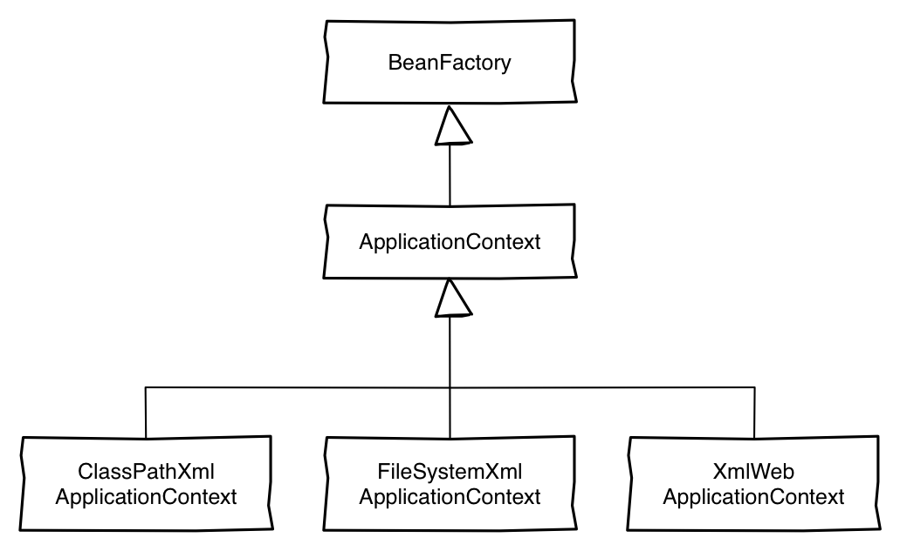

Spring Framework
Ayuda para el desarrollo de aplicaciones y contenedor de inyección de dependencias
Todos los conceptos son aplicables a otras tecnologías que usen el paradigma de orientación a objetos.

Relación entre ellos
Ejemplo
Paso 04 - ConfigXmlMain
Ejemplo
Paso 04 - FactoryMain
Ejemplo
Paso 04 - CompositeConfigMain
Pasos a seguir
1. definir un bean con
@Value("${full.name.property:defaultValue}")
Ejemplo
Paso 06
Ejemplo
Esto no lo vais a ver en código
Ejemplo
un valor para el conjunto
Paso 07
SPeL
- Es un lenguaje de expresiones que soporta el manipulado de objetos
- Define una gran cantidad de opciones:
- definición de literales
- expresiones booleanas, numéricas, …
- ejecución de métodos
- …
SPeL
- Nomenclatura quoted dotted: se diferencian los objetos con puntos.
- La notación es #{SPel}
- #{ 1 + 1}
- #{org.ejemplo.persona.edad}
- #{'hola'.endsWith('a')}
- #{ 3 > 4}
- Ejemplos PASO 8
MAAAL! como el SPeL lo definimos dentro de un xml,
la sintaxis tiene que ir como html para que se pueda interpretar bien. #{3 > 4}
@Configuration
public class AppConfig {
@Bean
public MyBean createMyBean(){
return new MyBean();
}
}
@RunWith(SpringJUnit4ClassRunner.class)
@ContextConfiguration("classpath:/mi-clase-test.xml")
public class MiClaseTest{
@Autowired
private MiClase miClase;
@Test
public void testMiMetodo(){
assertEquals(10, miClase.getMiMetodo());
}
}